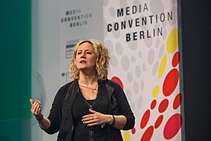

Explorez des images, illustrations et schémas représentatifs des travaux et recherches de Danah Boyd.
Danah Boyd présentant ses travaux sur les médias sociaux.Logo de Data & Society, l'institut qu'elle a fondé.Couverture de son livre It’s Complicated.

Séminaire 'Media Convention Berlin'.